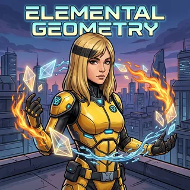

📡 Küldetés-eligazítás

📡 Prizma: A Zóna mélyén a kristályok tüskévé húzódnak össze: az alaplap minden csúcsából egy oldalél fut ugyanabba a pontba. Ez a gúla. A gúlafeladatokban ritkán a képlet a nehéz — sokkal inkább az, hogy megtaláld, melyik derékszögű háromszögben van az az adat, amit keresel. Ez az egység erről szól, és ha ezt megérted, a következő egységek felszín- és térfogatszámításaihoz is könnyebb lesz kiválasztani a szükséges adatot.
Három derékszögű háromszög lakik minden szabályos gúlában. Aki ezt a hármat látja, annak a gúla nem okoz gondot; aki nem, az a képletet is hiába tudja.
Hogyan keletkezik a gúla
📗 A gúla
Vegyünk egy síksokszöget és egy olyan \(E\) pontot, amely nincs a sokszög síkjában. Kössük össze \(E\)-t a (konvex) sokszög minden csúcsával. Az így keletkező háromszögek az alaplappal együtt egy testet zárnak közre: ez a gúla.
A sokszög az alaplap, az \(E\) pont a gúla csúcsa, az onnan induló szakaszok az oldalélek, az oldalélek és az alapélek által határolt háromszögek pedig az oldallapok. Az oldallapok együtt a palást.
A gúla magassága a csúcsból az alaplap síkjára bocsátott merőleges szakasz — illetve ennek hossza, vagyis a csúcs távolsága az alaplap síkjától.
A gúlát is az alaplapja szerint nevezzük el: háromoldalú, négyoldalú, hatoldalú gúla. A háromoldalú gúlának négy háromszöglapja van — ezt tetraédernek is hívjuk.
Szabályos gúla — hol van a magasság talppontja
📗 Szabályos gúla
Egy gúla szabályos, ha az alaplapja szabályos sokszög, és a magasság talppontja az alaplap középpontja.
Ebből következik, hogy a szabályos gúla minden oldaléle egyenlő, és minden oldallapja egybevágó egyenlő szárú háromszög.
A „középpont” itt a szabályos sokszög beírt és köré írt körének közös középpontját jelenti. Vigyázz a szóhasználattal: nálunk az apotéma mindig az alaplap apotémája; a szerb tankönyvek apotema piramide néven az oldallap magasságát értik — azt itt végig \(h\) jelöli. Az alaplap középpontjától egy alapél felezőpontjáig mért távolság az apotéma (\(r\)), az alaplap középpontjától az alaplap egyik csúcsáig mért távolság pedig a köré írt kör sugara (\(R\)) — mindkettőre szükség lesz.
Az ábra kezdőállapotát látod. Az interaktív vezérléshez JavaScript szükséges.
Az EOM háromszög derékszögű O-nál. Befogói H és r, átfogója h.
\(O\) az alaplap középpontja, \(M\) az \(AB\) alapél felezőpontja. Válassz háromszöget, és keresd meg a két befogót és az átfogót! \(h^2=H^2+r^2\); \(s^2=H^2+R^2\); \(s^2=h^2+(a/2)^2\). A térbeli vetítésen a derékszög is torzulhat; a jel a valódi derékszöget mutatja.
A szabályos gúla három derékszögű háromszöge
A szabályos gúla adatai három derékszögű háromszögbe rendeződnek. Mindháromban szerepel a magasság vagy az alapél fele, és mindhárom a Pitagorasz-tétellel dolgozik.
📘 A szabályos gúla három derékszögű háromszöge
Ezek a képletek szabályos gúlára érvényesek: kell hozzájuk, hogy a magasság talppontja az alaplap középpontja legyen. Jelölje \(a\) az alapélt, \(H\) a magasságot, \(r\) az alaplap apotémáját, \(R\) az alaplap köré írt sugarát, \(h\) az oldallap magasságát és \(s\) az oldalélt. Ekkor
- a magasság, az apotéma és az oldallap magassága: \(h^{2}=H^{2}+r^{2}\);
- a magasság, a köré írt sugár és az oldalél: \(s^{2}=H^{2}+R^{2}\);
- az oldallap magassága, az alapél fele és az oldalél: \(s^{2}=h^{2}+\left(\frac{a}{2}\right)^{2}\).
A harmadik háromszög magában az oldallapban fekszik: az egyenlő szárú háromszöget a magassága két derékszögű háromszögre vágja.
Van egy negyedik, immár síkbeli összefüggés is, amely az alaplapon belül köti össze a két sugarat:
\[R^{2}=r^{2}+\left(\frac{a}{2}\right)^{2}.\]A leggyakoribb alaplapokra:
| alaplap | apotéma \(r\) | köré írt sugár \(R\) |
|---|---|---|
| négyzet | \(\dfrac{a}{2}\) | \(\dfrac{a\sqrt2}{2}\) |
| szabályos háromszög | \(\dfrac{a\sqrt3}{6}\) | \(\dfrac{a\sqrt3}{3}\) |
| szabályos hatszög | \(\dfrac{a\sqrt3}{2}\) | \(a\) |
Mivel \(r < R\), mindig \(h < s\): az oldallap magassága rövidebb, mint az oldalél.
⚠️ Maxi trükkje
„Az oldalél és az oldallap magassága — mindkettő a csúcsba fut, tehát ugyanaz.”
Nem ugyanaz. Az oldalél (\(s\)) a csúcsot az alaplap egy csúcsával köti össze, az oldallap magassága (\(h\)) pedig egy alapél felezőpontjával. Az oldallap derékszögű félháromszögében \(h\) befogó, \(s\) átfogó, ezért \(h < s\). A palásthoz \(h\) kell — ha \(s\)-vel számolsz, túl nagy felszínt kapsz.
Szabályos háromoldalú gúla — itt az alaplap \(ABC\), a gúla csúcsa pedig \(D\). Az oldallap magassága az alapél felezőpontjába érkezik, nem a csúcsába.
🎯 Gyors kérdés
Melyik derékszögű háromszögben szerepel együtt a szabályos gúla oldaléle és testmagassága?
Adatból adat
✏️ Kristály-kamra szimuláció
Egy szabályos négyoldalú gúla alapéle \(6\) cm, magassága \(4\) cm. Számítsd ki az apotémát, az oldallap magasságát, a köré írt sugarat és az oldalélt!
Megoldás
Apotéma. Négyzet alaplapnál az apotéma az oldal fele: \(r=\frac{a}{2}=3\) cm.
Oldallap magassága (1. háromszög):
\[h=\sqrt{H^2+r^2}=\sqrt{4^2+3^2}=\sqrt{25}=5\ \text{cm}.\]A köré írt kör sugara. A négyzet átlójának fele: \(R=\frac{a\sqrt2}{2}=3\sqrt2\approx 4{,}24\) cm.
Oldalél (2. háromszög):
\[s=\sqrt{H^2+R^2}=\sqrt{16+18}=\sqrt{34}\approx 5{,}83\ \text{cm}.\]Ellenőrzés a 3. háromszöggel: \(\sqrt{h^2+\left(\frac a2\right)^2}=\sqrt{25+9}=\sqrt{34}\) — ugyanaz. És valóban \(h=5<5{,}83=s\).
A tetraéder
A háromoldalú gúlát tetraédernek nevezzük. Vigyázz a szóhasználattal:
- tetraéder: bármely háromoldalú gúla (négy háromszöglap);
- szabályos tetraéder: az, amelynek mind a hat éle egyenlő — ez az egyik szabályos test.
Minden szabályos tetraéder szabályos háromoldalú gúla, de fordítva nem igaz: a szabályos háromoldalú gúlának az oldaléle lehet hosszabb az alapélnél. Azt is érdemes tudni, hogy a tetraédernek nincs kitüntetett alaplapja: bármelyik lapja lehet az alaplap — ez a magasság számításánál számít.
🎯 Gyors kérdés
Igaz-e: minden szabályos háromoldalú gúla egyben szabályos tetraéder?
Gyakorolj! Válaszd ki a bevetésed:
📡 Prizma: A három derékszögű háromszög sok szabályos gúlás feladatban segít kiszámítani a hiányzó adatot. Most ezekkel az adatokkal állítjuk össze a palást területét és a térfogatot.